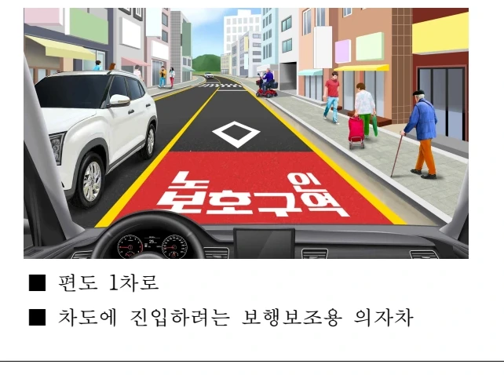

842. Дараах нөхцөлд хамгийн аюулгүй жолоодох арга 2-ыг сонгоно уу.

- ①Явган хүний туслах сандалтай тэргэнцэртэй аюулгүй зай барихын тулд төв шугам давж зүүн талаар явна.
- ②Явган хүний туслах сандалтай тэргэнцэрт хүрэхээс өмнө хурдаа сааруулж хөдөлгөөнийг нь ажиглана.
- ③Явган хүний туслах сандалтай тэргэнцэр замын эгнээнд орохоос өмнө хурдлан өнгөрнө.
- ④Явган хүний туслах сандалтай тэргэнцэр замын эгнээнд орохгүй байхаар дуут дохиог тасралтгүй өгнө.
- ⑤Явган хүний туслах сандалтай тэргэнцэр зорчих хэсэг рүү орох гэж байгаа тул түр зогсож аюулгүй байдлыг хангана.
Хариулт харах
Зөв хариулт
② Явган хүний туслах сандалтай тэргэнцэрт хүрэхээс өмнө хурдаа сааруулж хөдөлгөөнийг нь ажиглана.
⑤ Явган хүний туслах сандалтай тэргэнцэр зорчих хэсэг рүү орох гэж байгаа тул түр зогсож аюулгүй байдлыг хангана.
Үндэслэл
Эрсдэлийг урьдчилан таамаглах. Зурган дээрх нөхцөл байдал нь цахилгаан тэргэнцэртэй өндөр настан автомашины зам руу орохыг оролдож байна. Энэ үед олон жолооч цахилгаан тэргэнцрээс зайлсхийхийн тулд зүүн гар тийш хөдөлж, төвийн шугамыг давдаг. Энэ зан үйл нь замын хөдөлгөөний дүрмийг зөрчиж, эсрэг чиглэлд явж буй машинтай мөргөлдөх өндөр магадлалтай, аюултай үйлдэл гэдгийг санах нь зүйтэй. Иймд цахилгаан тэргэнцэр болон өндөр настан явган зорчигчийг илрүүлэх үед жолооч баруун гар талын хөдөлгөөнийг зохицуулж, цахилгаан тэргэнцэр болон өндөр настан явган зорчигчид хүрэхээс өмнө хурдаа багасгаж, юу хийж байгааг нь ажиглах ёстой. Мөн зурагт үзүүлсэн нөхцөл байдалд цахилгаан тэргэнцэр замын зорчих хэсэгт орж, хөндлөн гарах гэж байгаа тул гарцтай эсэхээс үл хамааран явган зорчигчийг түр зогсоож хамгаалах ёстой.
Үндэслэлийн текст нь машин орчуулга.